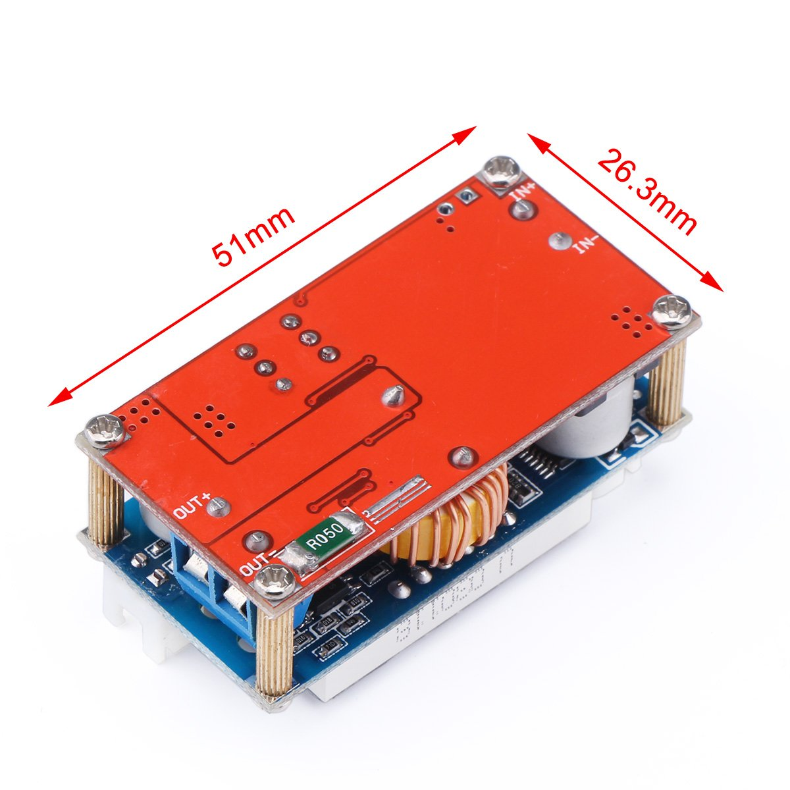
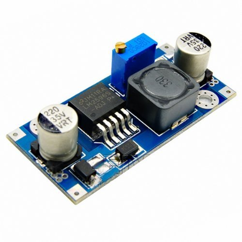

| Model | |
|---|---|
| DROK DC-DC Voltage Buck Converter Volt Regulator 5V-30V to 0.8-29V Step-down Transformer Power
Module 5A Constant Adjustable LED Dual Display Amp/Volt Ampere Ammeter Voltmeter Current Volt
Tester XL4005E1 |
 |
| LM2596 DC-DC Adjustable Buck Converter 3-40 V to 1.5-35v Step Down Power Supply High Efficiency
Voltage Regulator
Module LM2596S |
|
|
RioRand 5 Pack Boost Converter Module XL6009 DC 3.0-30 V to DC 5-35 V Output Voltage Adjustable Step
up Circuit Board 4A LM2596S |
 |
Idle power consumption
| Model | U in | U out | P |
|---|---|---|---|
| Drok (only bottom PCB) | 10 V | 5 V | 0.08 W |
| HW-411 | 10 V | 5 V | 0.08 W |
| RD086DY001 | 10 V | 5 V | 0.08 W |